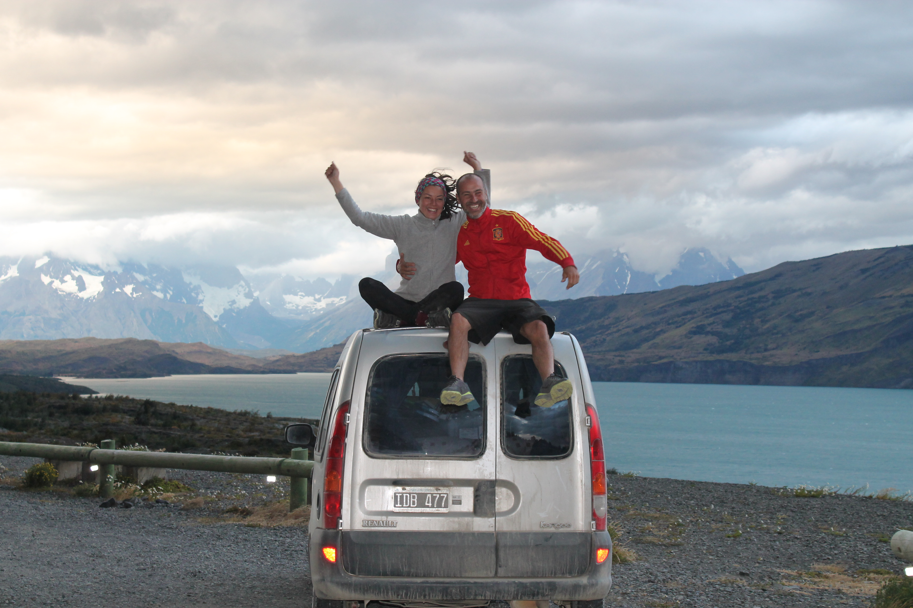
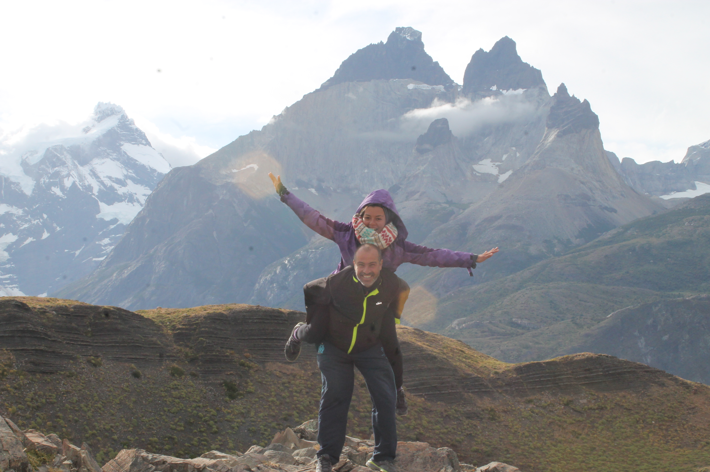
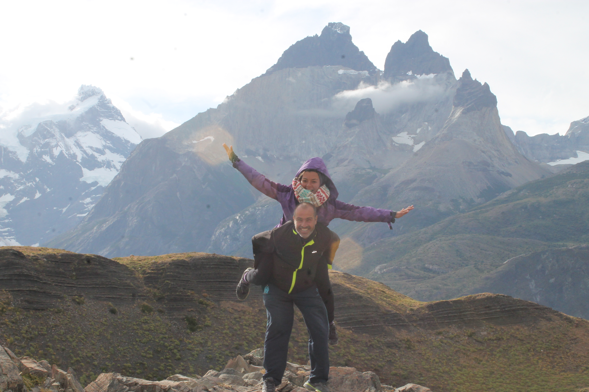
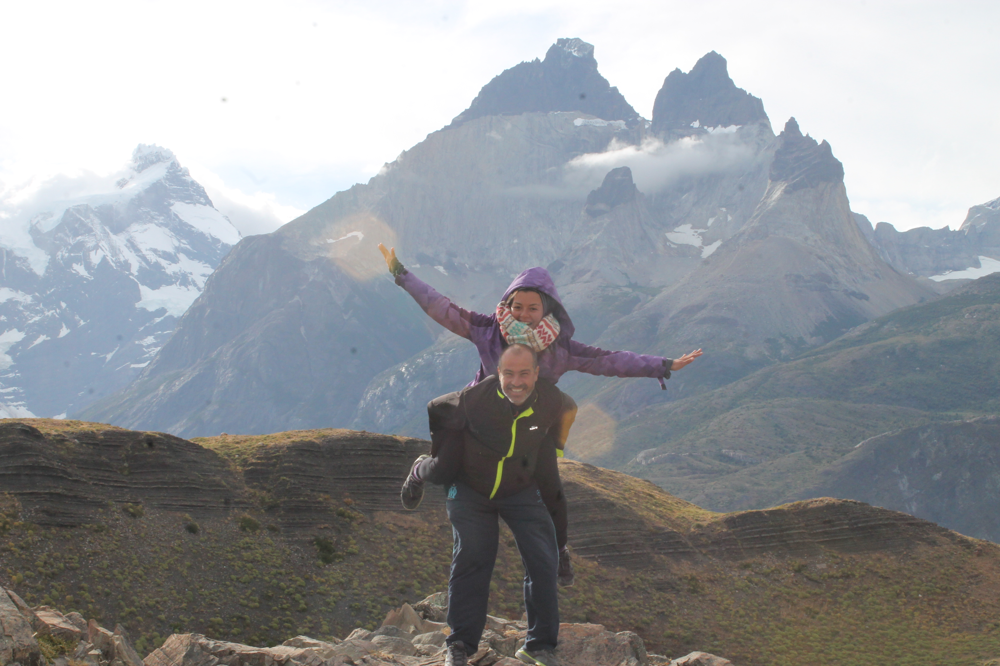

SEGUIMOS VIAJE
Acompañá nuestro camino

 


Viajar
Gabriel García Márquez (fragmento)
Viajar es regresar
viajar es volverse mundano
es conocer otra gente
es volver a empezar.
Empezar extendiendo la mano,
aprendiendo del fuerte,
es sentir soledad
Viajar es marcharse de casa,
es vestirse de loco
diciendo todo y nada en una postal.
Es dormir en otra cama,
sentir que el tiempo es corto
viajar es regresar.